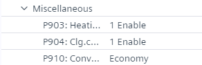
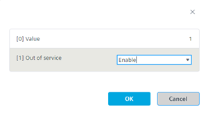
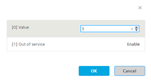
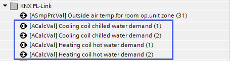

配置 RDG2 加热 /cooling 线圈需求（带区域）
- A RDG2 KNX PL-Link device is added.
- In the KNX PL-Link area, select the device.
- Select the Configuration tab on the right.
- The Configuration view shows the properties of the selected device feature.
- In the Name column, select Miscellaneous > P903: Heating coil for heat distribution.

- Click P903: Heating coil for heat distribution.
- In the Out of service drop-down list, select Enable.

- In the Value field, enter the zone number.

- Click OK.
- Click P904: Clg.coil for refrigeration distribution.
- In the Out of service drop-down list, select Enable.
- In the Value field, enter the zone number.
- Click OK.
一旦需求信号被激活，ABT站点就会在编程编辑器中创建相应的BACnet对象（需求信号在KNX PL-Link总线本身上聚合。配置为属于该区域的所有RDG2s（管理器和下级）的值都会被考虑。
示例：2 个 RDG2 设备，具有 2 个区域，每个设备都有加热和冷却需求信号。
